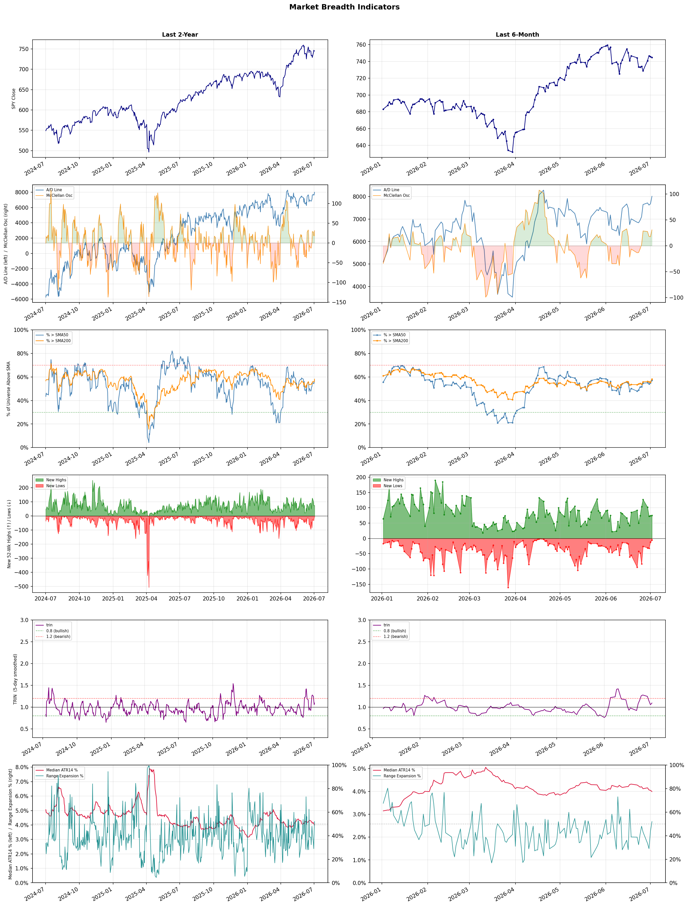

A daily market breadth and sector rotation report for active investors
| Item | Read |
|---|---|
| Regime | Selective Risk-On |
| Risk posture | Selective |
| Universe | 1,348 stocks tracked · 75 new 52-week highs · 30 active swing setups |
| Breadth | 57.2% of tracked stocks are above SMA50 — neutral range, new highs exceed new lows (75 vs 5) |
| Leadership | Healthcare Plans, Airlines, and Biotechnology |
| Weakest groups | Uranium, Chemicals, and Gold |
Use this report to prioritize research and chart review; validate entries, stops, liquidity, earnings, and risk before acting.
| Item | Read |
|---|---|
| Primary read | Selective Risk-On regime with Selective risk posture. |
| Research queue | CLOV, OSCR, HUM, PGNY, ALHC |
| Leadership focus | Healthcare Plans, Airlines, and Biotechnology |
| Caution list | Uranium, Chemicals, and Gold |
| Review prompt | Check extension risk, chart location, fundamentals, valuation, and earnings before using any research row. |
| Item | Read |
|---|---|
| Primary read | 1 active risk warnings; use screen output as watchlist input only. |
| Bullish screens | OSCR, PGNY, INCY, NUVL, VRTX |
| Bearish screens | none |
| Alerts / levels | Automated trigger, stop, ATR, liquidity, reward/risk, and event-risk levels are pending future enrichment. |
| Review prompt | Open the linked chart, define trigger and invalidation, then check liquidity and event risk independently. |
Risk Posture: Selective — screen backdrop supports selective research in leading industries
Metric context: McClellan below -50 = elevated selling pressure; below -100 = washout territory. Range Expansion = share of stocks with daily range above their 20-day average. Signal Density = share of tracked names appearing in signal screens.
| Breadth Date | % > SMA50 | % > SMA200 | New Highs | New Lows | McClellan | Median Range | Avg Range | Median ATR14 | Range Expansion | Signal Density |
|---|---|---|---|---|---|---|---|---|---|---|
| 2026-07-02 | 57.2% | 58.2% | 75 | 5 | 30.9 | 3.7% | 5.0% | 4.0% | 52.0% | 3.9% |

Prior comparison date: July 1, 2026
| Metric | Prior | Current | Change |
|---|---|---|---|
| Regime | Selective Risk-On | Selective Risk-On | unchanged |
| Risk Posture | Selective | Selective | unchanged |
| % > SMA50 | 54.9% | 57.2% | +2.3 pts |
| % > SMA200 | 55.6% | 58.2% | +2.6 pts |
| New Highs | 73 | 75 | +2 |
| New Lows | 12 | 5 | +7 |
Top-10 industries entering: Advertising Agencies and REIT - Hotel & Motel. Top-10 industries leaving: Building Products & Equipment and Semiconductor Equipment & Materials. New multi-signal long setups: ABNB, AFL, AHR, BAC, BCS, CB, CUZ, ELS, EW, FLYW. New multi-signal short setups: none.
| Status | Tickers | Read |
|---|---|---|
| Added | ABNB, AFL, AHR, BAC, BCS, CB, CUZ, ELS | New technical screen matches vs prior report. |
| Removed | AAL, ALHC, ALLO, BB, BCE, BEN, BNS, CVBF | No longer present in today's technical screen matches. |
| Still Active | ACHC, MAS, NEO, OKTA, YUM | Appeared in both current and prior reports. |
| Promoted | none | Model Screen Score improved by at least 15 points. |
| Downgraded | none | Model Screen Score declined by at least 15 points. |
| Direction | Industry | ETF | Prior Rank | Current Rank | Days | Rank Change |
|---|---|---|---|---|---|---|
| Rose | Household & Personal Products | XLP | 98 | 12 | 28 | +86 |
| Rose | Building Products & Equipment | XHB | 94 | 13 | 42 | +81 |
| Rose | Insurance - Property & Casualty | KIE | 84 | 5 | 28 | +79 |
| Rose | Insurance Brokers | N/A | 95 | 17 | 35 | +78 |
| Rose | Restaurants | N/A | 96 | 22 | 28 | +74 |
Bull: The Household & Personal Products sector is likely experiencing rising relative strength due to robust consumer spending, as indicated by the recent retail sales hitting a 12-month high, which supports demand for essential products. Additionally, XLP’s stable 2.6% yield provides an attractive income stream in a mixed market environment, making it a favorable choice for investors seeking stability amid economic fluctuations highlighted by the mixed performance of consumer stocks.
Bear: While the recent uptick in retail sales may appear promising, it is essential to consider that this growth could be driven by short-term factors such as inflationary pressures rather than sustainable consumer demand. Additionally, the stability of XLP’s 2.6% yield may not adequately compensate for potential risks, including rising interest rates and supply chain disruptions that could impact profit margins for household and personal products companies. As consumers face increasing financial strain, discretionary spending on non-essential items may decline, putting further pressure on the sector.
Verdict: The Household & Personal Products sector is benefiting from robust consumer spending, driven by recent retail sales growth, which suggests strong demand for essential goods. However, the key risk lies in the potential for inflationary pressures and rising interest rates to erode consumer purchasing power, leading to decreased discretionary spending and negatively impacting profit margins. Investors should monitor these economic indicators closely while considering the sector's stability and income potential.
Sources: Yahoo Finance, Google News
Bull: The Building Products & Equipment sector is experiencing rising relative strength primarily due to a rebound in the housing market, as evidenced by the positive movements in stocks like Opendoor and Offerpad, which indicate increased demand for homebuying solutions. Additionally, the headlines suggest that major homebuilders like Lennar and PulteGroup are starting to recover from previous slumps, signaling a potential stabilization and growth in housing starts, which bodes well for the entire industry. Furthermore, the ongoing discussions around mortgage rates imply that investors are optimistic about navigating potential challenges, further supporting the bullish sentiment in this sector.
Bear: While the recent uptick in stock prices for companies like Opendoor and Offerpad may suggest a temporary rebound, the underlying fundamentals of the housing market remain concerning. Rising mortgage rates, coupled with ongoing affordability issues and potential economic slowdowns, could dampen long-term demand for housing, undermining the recovery narrative. Additionally, the construction and building products sector continues to face significant headwinds, including supply chain disruptions and rising material costs, which may hinder profitability and growth prospects for major homebuilders like Lennar and PulteGroup.
Verdict: The Building Products & Equipment sector is likely experiencing a rise due to a rebound in the housing market, driven by increased demand for homebuying solutions and signs of recovery among major homebuilders, which is fostering optimism among investors. However, key risks remain, particularly from rising mortgage rates and persistent affordability challenges, which could undermine long-term housing demand and impact profitability in the sector. Investors should closely monitor these economic indicators and potential supply chain disruptions to assess the sustainability of this upward trend.
Sources: Yahoo Finance, Google News
Bull: The rising relative strength of the Property & Casualty (P&C) insurance industry can be attributed to increasing digitalization and exposure growth, as highlighted in the TradingView article on the five P&C insurers to buy. Additionally, the positive sentiment surrounding major players like Globe Life and Aon suggests a bullish outlook from Wall Street, further supported by strong recent performance metrics in the sector, as indicated by the best-performing ETFs of last week. This combination of technological advancement and favorable market conditions positions the P&C insurance industry for continued growth.
Bear: While the rising relative strength of the Property & Casualty insurance industry may seem promising, it is essential to recognize that increased digitalization can also lead to heightened competition and margin compression as new entrants disrupt traditional business models. Furthermore, the recent positive sentiment around major players like Globe Life and Aon may be overly optimistic, as the industry's profitability is heavily influenced by macroeconomic factors such as rising interest rates and inflation, which could strain underwriting results and ultimately dampen growth prospects despite current performance metrics.
Verdict: The Property & Casualty insurance industry's rising strength is primarily driven by increased digitalization and exposure growth, enabling insurers to enhance efficiency and reach new markets. However, a key risk lies in the potential for heightened competition and margin compression as new entrants leverage technology, coupled with macroeconomic pressures like rising interest rates and inflation that could adversely affect underwriting results. Investors should closely monitor these economic indicators and competitive dynamics to gauge the sustainability of the industry's growth trajectory.
Sources: Yahoo Finance, Google News
Bull: The Insurance Brokers industry is likely experiencing rising relative strength due to strong demand for brokerage services and ongoing mergers and acquisitions (M&A) activity, as highlighted in the Yahoo Finance article. Despite recent fears regarding AI disruptions, analysts are indicating that the selloff in broker stocks is overdone, suggesting that the fundamentals remain robust, particularly as evidenced by strong Q1 earnings from companies like Brown & Brown (NYSE:BRO). This combination of solid financial performance and strategic consolidation in the industry positions insurance brokers favorably against other sectors.
Bear: While the bull thesis highlights strong demand and M&A activity, it fails to address the significant risks posed by emerging AI technologies that could disrupt traditional brokerage models. The recent selloff may reflect a legitimate reassessment of valuations as investors recognize that AI-driven efficiencies could erode margins and market share for established brokers. Furthermore, the compression of multiples suggests that the market is anticipating a downturn in the cycle, indicating that the industry's fundamentals may not be as robust as claimed, particularly if economic conditions weaken.
Verdict: The Insurance Brokers industry is experiencing rising relative strength driven by strong demand for brokerage services and active M&A activity, which supports robust fundamentals as evidenced by solid earnings from key players. However, the key risk lies in the potential disruption from emerging AI technologies, which could undermine traditional brokerage models and lead to margin erosion, signaling that investors should remain cautious and closely monitor technological advancements in the sector.
Sources: Google News
Bull: The restaurant industry is experiencing a relative strength rise due to increased consumer engagement and visibility on social media, as highlighted by the article from Restaurant Business, which suggests that digital marketing is effectively driving foot traffic and sales. Additionally, the positive outlook on specific stocks like Chipotle and the broader fast-food sector, as noted by Barron's and The Motley Fool, reflects strong growth prospects and consumer demand, further bolstering investor confidence in the restaurant segment amidst recent pullbacks. This combination of social media influence and promising growth narratives positions the restaurant industry favorably compared to others.
Bear: While the bullish narrative highlights social media's role in boosting visibility and foot traffic, it overlooks the underlying challenges facing the restaurant industry, such as rising labor costs, inflationary pressures on food prices, and supply chain disruptions that could erode profit margins. Additionally, the recent pullback in stocks like CAVA suggests that investor sentiment may be more fragile than it appears, indicating that the current relative strength trend could be unsustainable as consumers tighten their discretionary spending in a potentially slowing economy.
Verdict: The restaurant industry's current rise can be fundamentally attributed to enhanced consumer engagement through social media, which is driving foot traffic and sales, alongside strong growth prospects for key players like Chipotle. However, the key risk lies in rising labor costs, inflationary pressures, and supply chain disruptions that could significantly impact profit margins, suggesting that investors should proceed with caution and monitor economic indicators closely.
Sources: Google News
| Direction | Industry | ETF | Prior Rank | Current Rank | Days | Rank Change |
|---|---|---|---|---|---|---|
| Fell | Steel | SLX | 8 | 78 | 35 | -70 |
| Fell | Other Industrial Metals & Mining | N/A | 16 | 82 | 35 | -66 |
| Fell | Copper | COPX | 14 | 80 | 28 | -66 |
| Fell | Solar | TAN | 3 | 67 | 35 | -64 |
| Fell | Oil & Gas Equipment & Services | XES | 11 | 74 | 42 | -63 |
Bear: While the recent headlines highlight positive sentiment and new highs for the VanEck Steel ETF (SLX), the underlying relative strength trend is falling, indicating that the sector is struggling compared to others. The optimism surrounding AI and infrastructure investments may not be sufficient to counteract persistent headwinds such as rising raw material costs, potential interest rate hikes impacting construction spending, and ongoing supply chain disruptions, which could undermine the sustainability of any short-term gains in steel prices and demand.
Bull: The relative weakness in the steel industry, as indicated by the falling trend against other sectors, can likely be attributed to broader economic uncertainties and potential supply chain disruptions, which are not directly highlighted in the recent headlines. However, the positive sentiment surrounding the steel sector, as evidenced by the new 52-week highs for the VanEck Steel ETF (SLX) and the favorable regulatory environment following Washington's support for steelmakers, suggests that these challenges may be temporary and that underlying demand—especially driven by AI and infrastructure investments—could lead to a rebound in relative strength moving forward.
Verdict: The steel industry's current decline can be fundamentally attributed to broader economic uncertainties, including rising raw material costs and potential interest rate hikes that may dampen construction spending. While positive sentiment from new highs in the VanEck Steel ETF (SLX) and investments in AI and infrastructure suggest a potential rebound, the key risk lies in the sustainability of these gains amid ongoing supply chain disruptions and economic headwinds, which could hinder long-term demand and pricing stability. Investors should remain cautious and monitor these external factors closely before making significant commitments to the sector.
Sources: Yahoo Finance, Google News
Bear: While the bull analyst attributes the sector's relative weakness to a shift towards technology-driven companies, this overlooks the fundamental challenges facing the Other Industrial Metals & Mining industry, such as rising operational costs, regulatory pressures, and geopolitical risks that can significantly impact supply chains. Additionally, the focus on a few high-performing stocks may indicate a lack of confidence in the broader sector's growth potential, suggesting that investors are wary of the sustainability of demand for industrial metals amidst economic uncertainties and potential recessions. These factors could lead to a prolonged downturn in the sector, making it a risky investment choice.
Bull: The relative weakness in the Other Industrial Metals & Mining sector may be attributed to a broader market shift towards more innovative and technology-driven sectors, as highlighted by the rise of AI-powered mining companies mentioned in the Boston Consulting Group article. Additionally, the focus on top-performing stocks in the metals sector, as noted by BofA and The Motley Fool, suggests that investors are gravitating towards specific high-potential companies rather than the sector as a whole, leading to a decline in relative strength for the broader industry. Furthermore, the recent headlines on Australian mining stocks indicate a competitive landscape that could be diverting investor attention and capital away from other segments within the industrial metals space.
Verdict: The decline in the Other Industrial Metals & Mining sector is primarily driven by rising operational costs, regulatory pressures, and geopolitical risks that threaten supply chains, overshadowing the allure of a few high-performing stocks. Investors should be cautious, as the lack of confidence in the broader industry's growth potential amidst economic uncertainties could signal a prolonged downturn, making it essential to carefully evaluate investment opportunities within this space.
Sources: Google News
Bear: While the bull analyst highlights concerns over global manufacturing and competition from other metals, it’s crucial to recognize that copper's price rally may be unsustainable given the current economic headwinds. Rising interest rates, inflationary pressures, and potential recessions in key markets could significantly reduce industrial demand for copper, undermining its recent gains. Furthermore, the narrative around copper's role in the AI and renewable energy sectors may be overhyped, as market dynamics can shift rapidly, leaving investors exposed to a potential downturn in this volatile commodity.
Bull: Copper's relative strength is likely falling due to concerns over global manufacturing weakening, as highlighted in the headline "If Global Manufacturing Weakens, Here’s What Happens to This Copper ETF." This apprehension may stem from broader economic uncertainties, which can dampen demand for copper, a key industrial metal. Additionally, the competitive landscape with other commodities, as suggested by the comparison in "Copper vs. Gold & Silver: Which Metal Wins the AI Boom?" indicates that investors may be reallocating their resources to metals perceived as more favorable in the current economic climate.
Verdict: The copper industry is experiencing a downward trend primarily due to weakening global manufacturing signals, which are dampening demand for the metal as economic uncertainties loom. The key risk from the bear case lies in rising interest rates and inflation, which could further suppress industrial demand and lead to a significant price correction if economic conditions deteriorate. Investors should remain cautious and consider reallocating resources or hedging against potential volatility in the copper market.
Sources: Yahoo Finance, Google News
Bear: While the bull analyst attributes the recent relative weakness in the solar industry to market volatility and a shift towards AI-related sectors, it overlooks the fundamental challenges facing solar investments, such as the impending expiration of key tax incentives and increasing competition from cheaper fossil fuels. Furthermore, the narrative of solar's strong performance following policy cycles may not hold in the current environment, where rising interest rates could significantly hinder financing for new projects, leading to a slowdown in growth that could decouple the sector from past trends.
Bull: The recent relative weakness in the solar industry, as reflected in the ETF TAN, can be attributed to heightened market volatility and investor sentiment shifting towards other sectors, particularly those benefiting from AI advancements, as noted in headlines discussing Enphase Energy and SolarEdge's gains tied to AI data center power themes. Additionally, concerns over rising interest rates and their impact on financing for solar projects, highlighted in the jobs report, may have contributed to a cautious outlook among investors, despite the sector's strong performance following policy cycles and its recent impressive rally.
Verdict: The recent decline in the solar industry, as reflected in ETF TAN, is primarily driven by rising interest rates which threaten financing for new solar projects, compounded by the impending expiration of key tax incentives and increased competition from cheaper fossil fuels. Investors should remain cautious, as these fundamental challenges could hinder growth and decouple the sector from its historical performance trends, making it essential to closely monitor interest rate developments and policy changes affecting the solar landscape.
Sources: Yahoo Finance, Google News
Bear: While the bull analyst attributes the Oil & Gas Equipment & Services sector's decline to volatility in oil prices and highlights specific stocks poised to weather industry weakness, it is crucial to recognize that the overall trend in the sector is concerning. The falling relative strength trend suggests that, despite some stocks performing well, the broader market sentiment is bearish, driven by persistent oversupply issues, increasing regulatory pressures for cleaner energy, and the looming threat of a global economic slowdown that could further depress demand for oil and gas services. This indicates that the sector may struggle to maintain momentum, even if a few companies manage to outperform in the short term.
Bull: The Oil & Gas Equipment & Services sector is experiencing a decline in relative strength primarily due to the volatility in oil prices, as highlighted by Morningstar's commentary on the disparity in performance among energy stocks amid soaring oil prices. Additionally, the broader industry challenges, such as potential oversupply and geopolitical tensions affecting demand, are likely contributing to the sector's underperformance compared to other industries, as noted in the discussions from Fidelity and TradingView regarding the resilience of specific oilfield services stocks amidst these headwinds.
Verdict: The Oil & Gas Equipment & Services sector is likely declining due to persistent oversupply issues and heightened regulatory pressures for cleaner energy, which are overshadowing the short-term resilience of select stocks. The key risk from the bear case is the looming threat of a global economic slowdown, which could further dampen demand for oil and gas services, suggesting that investors should approach this sector with caution and consider reallocating to more stable industries.
Sources: Google News
| Industry | Rank | ETF | 7d | 14d | 28d | 42d | Chg 42d | Size | 20D | 60D | Composite | Active Setups |
|---|---|---|---|---|---|---|---|---|---|---|---|---|
| Healthcare Plans | 1 | IHF | 3 | 8 | 10 | 5 | +4 | 10 | 26.5% | 71.0% | 0.979 | 0 |
| Airlines | 2 | N/A | 1 | 5 | 30 | 39 | +37 | 8 | 24.4% | 47.7% | 0.943 | 0 |
| Biotechnology | 3 | XBI | 7 | 22 | 38 | 38 | +35 | 93 | 24.0% | 32.0% | 0.917 | 1 |
| Diagnostics & Research | 4 | N/A | 2 | 12 | 13 | 40 | +36 | 16 | 20.1% | 40.9% | 0.911 | 0 |
| Insurance - Property & Casualty | 5 | KIE | 17 | 54 | 84 | 57 | +52 | 8 | 23.2% | 25.5% | 0.891 | 1 |
| REIT - Office | 6 | XLRE | 6 | 10 | 12 | 17 | +11 | 8 | 14.3% | 54.7% | 0.889 | 0 |
| Medical Care Facilities | 7 | IHF | 10 | 35 | 45 | 50 | +43 | 10 | 21.6% | 30.9% | 0.881 | 0 |
| Health Information Services | 8 | N/A | 12 | 14 | 19 | 34 | +26 | 13 | 16.1% | 38.2% | 0.856 | 0 |
| REIT - Hotel & Motel | 9 | XLRE | 5 | 6 | 7 | 4 | -5 | 9 | 8.4% | 40.3% | 0.851 | 0 |
| Advertising Agencies | 10 | N/A | 24 | 15 | 31 | 61 | +51 | 8 | 13.6% | 54.8% | 0.851 | 0 |
Rank columns (7d–42d) show the industry's rank that many trading days ago — lower is stronger. Chg 42d = rank change vs 42 trading days ago — positive means the industry moved up. 20D and 60D are the mean stock return within the industry over that period. Active Setups: count of today's swing-trade candidates from this industry appearing across all signal screens.
| Industry | Rank | ETF | 7d | 14d | 28d | 42d | Chg 42d | Size | 20D | 60D | Composite | Active Setups |
|---|---|---|---|---|---|---|---|---|---|---|---|---|
| Uranium | 88 | URA | 86 | 71 | 93 | 96 | +8 | 6 | -18.9% | -13.6% | 0.058 | 0 |
| Chemicals | 87 | N/A | 84 | 82 | 76 | 46 | -41 | 8 | -21.4% | -17.1% | 0.096 | 0 |
| Gold | 86 | GDX | 87 | 83 | 94 | 88 | +2 | 27 | -8.2% | -18.0% | 0.131 | 1 |
| Oil & Gas E&P | 85 | XOP | 81 | 87 | 43 | 41 | -44 | 26 | -13.0% | -19.4% | 0.157 | 0 |
| Oil & Gas Integrated | 84 | XLE | 82 | 79 | 23 | 22 | -62 | 10 | -13.0% | -14.3% | 0.176 | 0 |
| Utilities - Independent Power Producers | 83 | XLU | 68 | 58 | 88 | 80 | -3 | 5 | -7.3% | -2.6% | 0.180 | 1 |
| Other Industrial Metals & Mining | 82 | N/A | 77 | 40 | 56 | 36 | -46 | 21 | -18.7% | 4.7% | 0.181 | 1 |
| Agricultural Inputs | 81 | N/A | 83 | 86 | 83 | 65 | -16 | 5 | -3.6% | -17.5% | 0.216 | 0 |
| Copper | 80 | COPX | 76 | 17 | 14 | 62 | -18 | 6 | -17.8% | -3.7% | 0.218 | 0 |
| Auto Manufacturers | 79 | N/A | 85 | 81 | 50 | 81 | +2 | 10 | -10.2% | -5.4% | 0.232 | 0 |
Rank columns (7d–42d) show the industry's rank that many trading days ago — lower is stronger. Chg 42d = rank change vs 42 trading days ago — positive means the industry moved up. 20D and 60D are the mean stock return within the industry over that period. Active Setups: count of today's swing-trade candidates from this industry appearing across all signal screens.
These are research candidates from top-ranked stocks, capped at five names per industry to avoid over-concentration. Returns shown (60D, 120D, 250D) are historical — they reflect where prices have already moved, not forward expectations. Extension Risk flags names that may require extra patience or a better entry point. They are not buy signals.
Chart: TV = TradingView chart (opens in browser); PDF = local chart file (if downloaded).
| Ticker | Name | Industry | Industry Rank | Market Cap | 60D Hist | 120D Hist | 250D Hist | Extension Risk | Research Reason | Chart |
|---|---|---|---|---|---|---|---|---|---|---|
| CLOV | Clover Health | Healthcare Plans | 1 | N/A | 176.8% | 107.9% | 105.5% | Very extended | Top-ranked in industry; very extended | TV |
| OSCR | Oscar Health | Healthcare Plans | 1 | N/A | 148.1% | 90.4% | 95.4% | Very extended | Top-ranked in industry; very extended | TV |
| HUM | Humana | Healthcare Plans | 1 | N/A | 101.2% | 42.9% | 65.5% | Very extended | Top-ranked in industry; very extended | TV |
| PGNY | Progyny | Healthcare Plans | 1 | N/A | 76.1% | 10.2% | 40.8% | Extended | Top-ranked in industry; extended | TV |
| ALHC | Alignment Healthcare | Healthcare Plans | 1 | N/A | 9.9% | 13.6% | 75.4% | Constructive | Top-ranked in industry | TV |
| ULCC | Frontier Group | Airlines | 2 | N/A | 109.4% | 57.3% | 82.7% | Very extended | Top-ranked in industry; very extended | TV |
| AAL | American Airlines | Airlines | 2 | N/A | 65.8% | 13.9% | 53.3% | Extended | Top-ranked in industry; extended | TV |
| UAL | United Airlines | Airlines | 2 | N/A | 49.3% | 15.5% | 61.9% | Constructive | Top-ranked in industry | TV |
| LUV | Southwest Airlines | Airlines | 2 | N/A | 32.7% | 17.1% | 47.4% | Constructive | Top-ranked in industry | TV |
| JBLU | JetBlue Airways | Airlines | 2 | N/A | 32.3% | 19.4% | 35.0% | Constructive | Top-ranked in industry | TV |
| ABSI | Absci Corp | Biotechnology | 3 | N/A | 297.9% | 237.8% | 319.5% | Very extended | Top-ranked in industry; very extended | TV |
| SLS | Sellas Life Sciences | Biotechnology | 3 | N/A | 232.2% | 288.1% | 590.3% | Very extended | Top-ranked in industry; very extended | TV |
| DFTX | Definium Therapeutics | Biotechnology | 3 | N/A | 114.7% | 200.6% | 516.3% | Very extended | Top-ranked in industry; very extended | TV |
| MRNA | Moderna | Biotechnology | 3 | N/A | 59.2% | 135.6% | 161.6% | Extended | Top-ranked in industry; extended | TV |
| ABVX | Abivax S.A. | Biotechnology | 3 | N/A | 24.2% | 25.2% | 1717.2% | Constructive | Top-ranked in industry | TV |
| TWST | Twist Bioscience | Diagnostics & Research | 4 | N/A | 98.0% | 185.7% | 160.0% | Extended | Top-ranked in industry; extended | TV |
| NEO | NeoGenomics | Diagnostics & Research | 4 | N/A | 88.1% | 18.2% | 100.8% | Extended | Top-ranked in industry; extended | TV |
| GH | Guardant Health | Diagnostics & Research | 4 | N/A | 80.0% | 54.5% | 232.6% | Extended | Top-ranked in industry; extended | TV |
| ADPT | Adaptive Biotechnologies | Diagnostics & Research | 4 | N/A | 54.6% | 32.8% | 79.6% | Extended | Top-ranked in industry; extended | TV |
| NTRA | Natera | Diagnostics & Research | 4 | N/A | 33.5% | 16.6% | 72.7% | Constructive | Top-ranked in industry | TV |
These are technical screen matches from existing signal files. They are not trade recommendations. Trigger, stop, ATR, liquidity, reward/risk, and event risk still require separate validation until those inputs are available.
Model Screen Score is weighted by signal count, industry rank, freshness, and setup type. It is not a probability of profit, expected return, or suitability rating. Industry cap: max 3 candidates per industry.
Signal glossary: Momentum Pullback = stock in an uptrend that has pulled back 10–30% and shows re-entry conditions. MA Compression = short- and long-term moving averages converging, often preceding a directional move. Three-Day Up/Down = three consecutive closes in the same direction. New 52Wk High/Low = price reached a new annual extreme.
Chart: TV = TradingView chart (opens in browser); PDF = local chart file (if downloaded).
| Ticker | Industry | Setups | Close | Industry Rank | Signal Count | Model Screen Score | Reason | Chart |
|---|---|---|---|---|---|---|---|---|
| V | Credit Services | MA Compression; New 52Wk High; Three-Day Up | 362.13 | 29 | 3 | 90 | Multi-signal; new-high strength | TV |
| OSCR | Healthcare Plans | New 52Wk High; Three-Day Up | 32.18 | 1 | 2 | 100 | Multi-signal; top industry breakout | TV |
| PGNY | Healthcare Plans | New 52Wk High; Three-Day Up | 30.22 | 1 | 2 | 100 | Multi-signal; top industry breakout | TV |
| INCY | Biotechnology | New 52Wk High; Three-Day Up | 116.86 | 3 | 2 | 100 | Multi-signal; top industry breakout | TV |
| NUVL | Biotechnology | New 52Wk High; Three-Day Up | 123.73 | 3 | 2 | 100 | Multi-signal; top industry breakout | TV |
| VRTX | Biotechnology | New 52Wk High; Three-Day Up | 528.04 | 3 | 2 | 100 | Multi-signal; top industry breakout | TV |
| ILMN | Diagnostics & Research | New 52Wk High; Three-Day Up | 188.68 | 4 | 2 | 93 | Multi-signal; top industry breakout | TV |
| NEO | Diagnostics & Research | New 52Wk High; Three-Day Up | 15.16 | 4 | 2 | 93 | Multi-signal; top industry breakout | TV |
| NTRA | Diagnostics & Research | New 52Wk High; Three-Day Up | 279.32 | 4 | 2 | 93 | Multi-signal; top industry breakout | TV |
| CB | Insurance - Property & Casualty | New 52Wk High; Three-Day Up | 361.17 | 5 | 2 | 93 | Multi-signal; top industry breakout | TV |
| TRV | Insurance - Property & Casualty | New 52Wk High; Three-Day Up | 342.31 | 5 | 2 | 93 | Multi-signal; top industry breakout | TV |
| CUZ | REIT - Office | New 52Wk High; Three-Day Up | 31.06 | 6 | 2 | 93 | Multi-signal; top industry breakout | TV |
| ACHC | Medical Care Facilities | New 52Wk High; Three-Day Up | 31.91 | 7 | 2 | 93 | Multi-signal; top industry breakout | TV |
| BAC | Banks - Diversified | New 52Wk High; Three-Day Up | 58.73 | 11 | 2 | 85 | Multi-signal; new-high strength | TV |
| BCS | Banks - Diversified | New 52Wk High; Three-Day Up | 27.77 | 11 | 2 | 85 | Multi-signal; new-high strength | TV |
| HSBC | Banks - Diversified | New 52Wk High; Three-Day Up | 96.78 | 11 | 2 | 85 | Multi-signal; new-high strength | TV |
| MAS | Building Products & Equipment | New 52Wk High; Three-Day Up | 82.77 | 13 | 2 | 85 | Multi-signal; new-high strength | TV |
| OHI | REIT - Healthcare Facilities | MA Compression; New 52Wk High | 49.40 | 16 | 2 | 82 | Multi-signal; new-high strength | TV |
| AHR | REIT - Healthcare Facilities | New 52Wk High; Three-Day Up | 55.04 | 16 | 2 | 77 | Multi-signal; new-high strength | TV |
| VTR | REIT - Healthcare Facilities | New 52Wk High; Three-Day Up | 92.52 | 16 | 2 | 77 | Multi-signal; new-high strength | TV |
| FLYW | Software - Infrastructure | New 52Wk High; Three-Day Up | 18.75 | 20 | 2 | 77 | Multi-signal; new-high strength | TV |
| OKTA | Software - Infrastructure | New 52Wk High; Three-Day Up | 141.42 | 20 | 2 | 77 | Multi-signal; new-high strength | TV |
| WBS | Banks - Regional | New 52Wk High; Three-Day Up | 76.72 | 24 | 2 | 77 | Multi-signal; new-high strength | TV |
| ABNB | Travel Services | New 52Wk High; Three-Day Up | 148.93 | 25 | 2 | 77 | Multi-signal; new-high strength | TV |
| ELS | REIT - Residential | MA Compression; Three-Day Up | 66.25 | 21 | 2 | 72 | Multi-signal; compression setup | TV |
| YUM | Restaurants | MA Compression; Three-Day Up | 164.73 | 22 | 2 | 72 | Multi-signal; compression setup | TV |
| RSI | Gambling | New 52Wk High; Three-Day Up | 31.68 | 27 | 2 | 70 | Multi-signal; new-high strength | TV |
| SGHC | Gambling | New 52Wk High; Three-Day Up | 14.51 | 27 | 2 | 70 | Multi-signal; new-high strength | TV |
| EW | Medical Devices | New 52Wk High; Three-Day Up | 94.37 | 32 | 2 | 70 | Multi-signal; new-high strength | TV |
| AFL | Insurance - Life | New 52Wk High; Three-Day Up | 120.88 | 33 | 2 | 70 | Multi-signal; new-high strength | TV |
How To Use This Report
| Use | Purpose |
|---|---|
| Market map | Start with breadth, regime, risk warnings, and what changed since the prior report. |
| Industry scan | Use leading, deteriorating, rising, and declining industries to focus research. |
| Research queue | Treat long-term candidates as names for deeper fundamental, valuation, and chart review. |
| Technical review | Treat bullish and bearish screen matches as watchlist inputs that require independent trigger, stop, liquidity, and event-risk checks. |
| Source follow-up | Use chart links and source files to verify raw inputs before relying on any row. |
What This Report Is Not
| Not | Meaning |
|---|---|
| Investment advice | The report does not evaluate personal objectives, risk tolerance, tax situation, account type, or suitability. |
| Buy/sell recommendation | Named tickers are research candidates or screen matches, not recommendations to transact. |
| Price target | The report does not provide fair value estimates, targets, or expected returns. |
| Trade plan | Trigger, stop, sizing, reward/risk, liquidity, and event-risk review remain separate user work. |
| Performance claim | Model Screen Score is not validated historical performance or a forecast of future results. |
| Item | Note |
|---|---|
| Version | Daily Report Methodology v1 |
| Model Screen Score | Screen-fit rank based on signal count, industry rank, freshness, and setup type. |
| Not predictive proof | The score is not expected return, probability of profit, historical validation, or suitability analysis. |
| Industry ranks | Composite industry ranks use existing daily ranking outputs and historical rank columns when available. |
| Research candidates | Long-term rows are research candidates from ranked stocks and leading industries, with historical returns labeled as historical only. |
| Technical matches | Bullish and bearish rows are screen matches requiring independent chart, trigger, stop, liquidity, and event-risk review. |
| Source | Status | Rows | Path |
|---|---|---|---|
| Market breadth | present | 1254 | breadth_20260702.csv |
| Industry composite rankings | present | 88 | all_industry_composite_20260702.csv |
| Top ranked stocks | present | 183 | top_ranked_composite_20260702.csv |
| All ranked stocks | present | 1348 | all_stocks_composite_sorted_20260702.csv |
| Top momentum pullbacks | present | 1495 | top_momentum_pullbacks_20260702.csv |
| MA compression | present | 1495 | ma_compression_stocks_20260702.csv |
| Three-day up/down | present | 276 | three_day_up_down_stocks_20260702.csv |
| New 52-week members | present | 80 | breadth_new_52wk_members_20260702.csv |
This report is generated from automated technical screens and is for informational and research purposes only. It is not investment advice, a solicitation, or a recommendation to buy or sell any security. Past performance is not indicative of future results. You are solely responsible for your own investment decisions. Consult a licensed financial advisor before acting on any information herein.